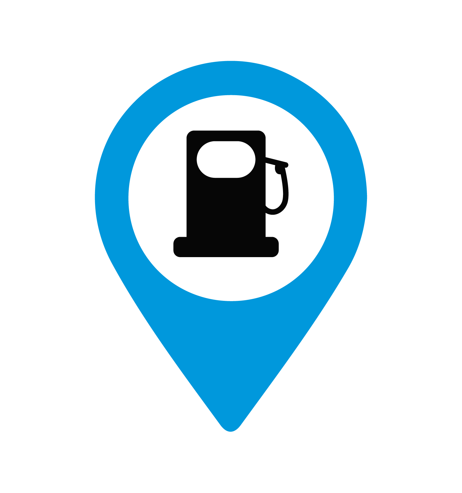

Estaciones de Servicio
de Combustibles
Solución integral para el análisis territorial de infraestructura energética, maximizando rentabilidad y reduciendo riesgos operativos.
Inteligencia de negocio y viabilidad
La inversión en la apertura, adquisición u operación de estaciones de servicio de combustibles y complementarios exige una precisión absoluta para garantizar la rentabilidad y el cumplimiento normativo. En BIG-i, fusionamos la ciencia de datos con el análisis territorial, integrando variables geoespaciales, demográficas, económicas y de movilidad. Desarrollamos estudios estratégicos de mercado y localización que minimizan el riesgo financiero y maximizan el éxito comercial de sus activos energéticos.
Dirigido a Gasolineras e Hidrocarburos
Análisis territorial para la toma de decisiones en toda la cadena de valor energética. Integramos información geoespacial, demográfica, económica y regulatoria para minimizar el riesgo financiero y maximizar el éxito comercial de sus activos.
Gasolineras
Puntos de consumo y rentabilidad
Evaluamos ubicaciones estratégicas para estaciones de servicio considerando demanda, competencia, tráfico, perfil socioeconómico y regulación para maximizar la rentabilidad.
- check_circleApertura de nuevas estaciones
- check_circleEvaluación de inversión
- check_circleOptimización de red existente
- check_circleEstrategia comercial
Hidrocarburos
Infraestructura, logística y distribución
Analizamos la infraestructura que permite el transporte, almacenamiento y distribución de hidrocarburos para mejorar la eficiencia operativa y mitigar riesgos.
- check_circlePlaneación de infraestructura
- check_circleEvaluación de riesgos
- check_circleOptimización logística
- check_circleAnálisis territorial estratégico
Análisis Territorial Integrado
Simulador GISFiltros Espaciales
filter_listCapa: Demanda potencial
¿Qué analizamos?
Variables críticas integradas en nuestro modelo espacial.
Demanda potencial
Estimamos el consumo actual y proyectado de combustibles en la zona de interés.
Competencia
Identificamos estaciones existentes y su área de influencia comercial y logística.
Movilidad y tráfico
Analizamos flujos vehiculares, aforos direccionales y conectividad vial primaria.
Demografía
Perfil socioeconómico, poder adquisitivo y densidad poblacional del área de impacto.
Regulación
Verificamos viabilidad de permisos CRE, uso de suelo y normativas aplicables.
Accesibilidad
Evaluamos radios de giro, accesos, visibilidad y facilidad de maniobra.
Rentabilidad
Calculamos indicadores clave financieros para estimar el retorno de inversión y TIR.
Riesgos
Identificamos riesgos naturales, antropogénicos y restricciones de operación.
Productos y Servicios
Geomarketing, análisis de sitio y soporte técnico para hidrocarburos. A través de herramientas avanzadas de inteligencia artificial, Sistemas de Información Geográfica (SIG) y modelos de análisis predictivo, ofrecemos soluciones integrales en cada etapa del proyecto.
Estudios de Localización Óptima y Geomarketing
Análisis de tráfico, flujos vehiculares y accesibilidad vial para identificar los puntos con mayor potencial de venta y captación de mercado.
Estudios de Impacto Urbano, Ambiental y de Movilidad
Elaboración de la documentación técnica y cartográfica requerida por las autoridades reguladoras para la obtención de licencias de construcción y operación.
Análisis de Competencia y Canibalización
Reestructuración de la cartografía propiedad por propiedad, vinculación multifinalitaria de datos fiscales y jurídicos, e implementación de sistemas de información geográfica catastral.
Análisis Socioeconómico y Demográfico
Caracterización del entorno de la estación (densidad, niveles socioeconómicos y hábitos de consumo) para optimizar la oferta de servicios complementarios.
Soluciones Integrales
Nuestros servicios están dirigidos a los actores clave de la cadena de distribución y venta al por menor de combustibles.
Grupos Gasolineros y Franquicias
Expansión estratégica de redes de estaciones de servicio, evaluación de nuevas ubicaciones y optimización de carteras de activos.
Inversionistas y Fondos de Capital
Auditoría territorial y análisis de riesgo antes de la adquisición, fusión o compra de estaciones de servicio en operación.
Infraestructura Comercial
Proyectos de usos mixtos que integren estaciones de servicio con centros logísticos, paradores viales o plazas comerciales.
Distribuidores y Mayoristas
Optimización de rutas de suministro, análisis de zonas de cobertura logística y localización estratégica.
Nuevas Energías y Multimodal
Estudios de viabilidad territorial para transición o integración de electrolineras e infraestructura de combustibles alternativos.
Consultores y Firmas Legales
Soporte cartográfico y técnico especializado para respaldar trámites regulatorios, litigios de derechos de vía o cumplimiento de distancias mínimas normativas.
¿Interesado en este estudio?
Garantizamos la viabilidad y éxito comercial de tus inversiones en infraestructura energética con datos precisos.